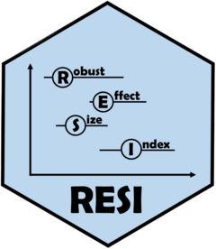

Function reference
Model-based functions
Use these functions on fitted models to obtain RESI estimates and confidence intervals.
-
resi() - Robust Effect Size Index (RESI) point and interval estimation for models
-
resi_pe() - Robust Effect Size Index (RESI) Point Estimation
Conversion functions
Manual functions for converting test statistics to RESI estimates and converting RESI estimates to and from other effect size measures.
-
chisq2S() - Compute the robust effect size index estimate from chi-squared statistic.
-
d2S() - Covert Cohen's d to |S|
-
f2S() - Compute the robust effect size index estimate from F-statistic
-
fsq2S() - Covert Cohen's f^2 to S
-
Rsq2S() - Covert R^2 to S
-
S2d() - Convert S to Cohen's d
-
S2fsq() - Covert S to Cohen's f^2
-
S2Rsq() - Covert S to R^2
-
t2S() - Compute the robust effect size index estimate from t statistic (default)
-
z2S() - Compute the robust effect size index estimate from Z statistic
-
anova(<resi>) - Anova method for resi objects
-
ggplot(<resi>) - Plotting RESI Estimates and CIs
-
omnibus() - Omnibus (Overall) Wald Test for resi objects
-
plot(<resi>) - Plotting RESI Estimates and CIs
-
summary(<resi>) - Summary method for resi objects
-
depression - Depression Treatment Data
-
insurance - US Health Insurance Data